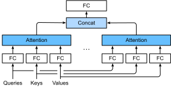

Attention Đa Đầu¶
Trong thực tế, với cùng một tập hợp các query, key và value, chúng ta có thể muốn mô hình kết hợp kiến thức từ các hành vi khác nhau của cùng một cơ chế attention, chẳng hạn như nắm bắt các phụ thuộc ở các phạm vi khác nhau (ví dụ: phạm vi ngắn hơn so với phạm vi dài hơn) trong một chuỗi. Do đó, có thể có lợi khi cho phép cơ chế attention của chúng ta sử dụng đồng thời các không gian con biểu diễn khác nhau của query, key và value.
Để đạt được điều này, thay vì thực hiện một lần attention pooling duy nhất, query, key và value có thể được biến đổi bằng \(h\) phép chiếu tuyến tính được học độc lập. Sau đó, \(h\) query, key và value đã chiếu này được đưa vào attention pooling song song. Cuối cùng, \(h\) đầu ra attention pooling được nối lại và biến đổi bằng một phép chiếu tuyến tính được học khác để tạo ra đầu ra cuối cùng. Thiết kế này được gọi là attention đa đầu, trong đó mỗi trong số \(h\) đầu ra attention pooling là một đầu (head) [Vaswani.Shazeer.Parmar.ea.2017]. Sử dụng các lớp kết nối đầy đủ để thực hiện các biến đổi tuyến tính có thể học, fig_multi-head-attention mô tả attention đa đầu.

Mô Hình¶
Trước khi cung cấp triển khai của attention đa đầu, hãy cùng hình thức hóa mô hình này về mặt toán học. Cho một query \(\mathbf{q} \in \mathbb{R}^{d_q}\), một key \(\mathbf{k} \in \mathbb{R}^{d_k}\), và một value \(\mathbf{v} \in \mathbb{R}^{d_v}\), mỗi đầu attention \(\mathbf{h}_i\) (\(i = 1, \ldots, h\)) được tính như sau:
trong đó \(\mathbf W_i^{(q)}\in\mathbb R^{p_q\times d_q}\), \(\mathbf W_i^{(k)}\in\mathbb R^{p_k\times d_k}\), và \(\mathbf W_i^{(v)}\in\mathbb R^{p_v\times d_v}\) là các tham số có thể học và \(f\) là attention pooling, chẳng hạn như attention cộng và attention tích vô hướng có tỷ lệ trong sec_attention-scoring-functions. Đầu ra attention đa đầu là một phép biến đổi tuyến tính khác thông qua các tham số có thể học \(\mathbf W_o\in\mathbb R^{p_o\times h p_v}\) của sự nối ghép \(h\) đầu:
Dựa trên thiết kế này, mỗi đầu có thể chú ý vào các phần khác nhau của đầu vào. Các hàm phức tạp hơn so với trung bình có trọng số đơn giản có thể được biểu diễn.
Triển Khai¶
Trong triển khai của chúng ta,
chúng ta [chọn attention tích vô hướng có tỷ lệ
cho mỗi đầu] của attention đa đầu.
Để tránh sự tăng trưởng đáng kể về chi phí tính toán và chi phí tham số hóa,
chúng ta đặt \(p_q = p_k = p_v = p_o / h\).
Lưu ý rằng \(h\) đầu có thể được tính song song
nếu chúng ta đặt số đầu ra
của các phép biến đổi tuyến tính
cho query, key và value
bằng \(p_q h = p_k h = p_v h = p_o\).
Trong triển khai sau,
\(p_o\) được chỉ định qua đối số num_hiddens.
class MultiHeadAttention(d2l.Module):
"""Multi-head attention."""
def __init__(self, num_hiddens, num_heads, dropout, bias=False, **kwargs):
super().__init__()
self.num_heads = num_heads
self.attention = d2l.DotProductAttention(dropout)
self.W_q = nn.LazyLinear(num_hiddens, bias=bias)
self.W_k = nn.LazyLinear(num_hiddens, bias=bias)
self.W_v = nn.LazyLinear(num_hiddens, bias=bias)
self.W_o = nn.LazyLinear(num_hiddens, bias=bias)
def forward(self, queries, keys, values, valid_lens):
# Shape of queries, keys, or values:
# (batch_size, no. of queries or key-value pairs, num_hiddens)
# Shape of valid_lens: (batch_size,) or (batch_size, no. of queries)
# After transposing, shape of output queries, keys, or values:
# (batch_size * num_heads, no. of queries or key-value pairs,
# num_hiddens / num_heads)
queries = self.transpose_qkv(self.W_q(queries))
keys = self.transpose_qkv(self.W_k(keys))
values = self.transpose_qkv(self.W_v(values))
if valid_lens is not None:
# On axis 0, copy the first item (scalar or vector) for num_heads
# times, then copy the next item, and so on
valid_lens = torch.repeat_interleave(
valid_lens, repeats=self.num_heads, dim=0)
# Shape of output: (batch_size * num_heads, no. of queries,
# num_hiddens / num_heads)
output = self.attention(queries, keys, values, valid_lens)
# Shape of output_concat: (batch_size, no. of queries, num_hiddens)
output_concat = self.transpose_output(output)
return self.W_o(output_concat)
Để cho phép [tính toán song song của nhiều đầu],
lớp MultiHeadAttention ở trên sử dụng hai phương thức hoán vị được định nghĩa bên dưới.
Cụ thể,
phương thức transpose_output đảo ngược phép toán
của phương thức transpose_qkv.
@d2l.add_to_class(MultiHeadAttention)
def transpose_qkv(self, X):
"""Transposition for parallel computation of multiple attention heads."""
# Shape of input X: (batch_size, no. of queries or key-value pairs,
# num_hiddens). Shape of output X: (batch_size, no. of queries or
# key-value pairs, num_heads, num_hiddens / num_heads)
X = X.reshape(X.shape[0], X.shape[1], self.num_heads, -1)
# Shape of output X: (batch_size, num_heads, no. of queries or key-value
# pairs, num_hiddens / num_heads)
X = X.permute(0, 2, 1, 3)
# Shape of output: (batch_size * num_heads, no. of queries or key-value
# pairs, num_hiddens / num_heads)
return X.reshape(-1, X.shape[2], X.shape[3])
@d2l.add_to_class(MultiHeadAttention)
def transpose_output(self, X):
"""Reverse the operation of transpose_qkv."""
X = X.reshape(-1, self.num_heads, X.shape[1], X.shape[2])
X = X.permute(0, 2, 1, 3)
return X.reshape(X.shape[0], X.shape[1], -1)
Hãy [kiểm tra lớp MultiHeadAttention đã triển khai]
sử dụng ví dụ đơn giản trong đó key và value là giống nhau.
Kết quả là,
hình dạng của đầu ra attention đa đầu
là (batch_size, num_queries, num_hiddens).
num_hiddens, num_heads = 100, 5
attention = MultiHeadAttention(num_hiddens, num_heads, 0.5)
batch_size, num_queries, num_kvpairs = 2, 4, 6
valid_lens = d2l.tensor([3, 2])
X = d2l.ones((batch_size, num_queries, num_hiddens))
Y = d2l.ones((batch_size, num_kvpairs, num_hiddens))
d2l.check_shape(attention(X, Y, Y, valid_lens),
(batch_size, num_queries, num_hiddens))
Tóm Tắt¶
Attention đa đầu kết hợp kiến thức của cùng một attention pooling thông qua các không gian con biểu diễn khác nhau của query, key và value. Để tính toán nhiều đầu của attention đa đầu song song, cần phải có thao tác tensor phù hợp.
Bài Tập¶
- Trực quan hóa các trọng số attention của nhiều đầu trong thí nghiệm này.
- Giả sử rằng chúng ta có một mô hình đã được huấn luyện dựa trên attention đa đầu và chúng ta muốn cắt tỉa các đầu attention ít quan trọng hơn để tăng tốc độ dự đoán. Làm thế nào chúng ta có thể thiết kế các thí nghiệm để đo lường tầm quan trọng của một đầu attention?